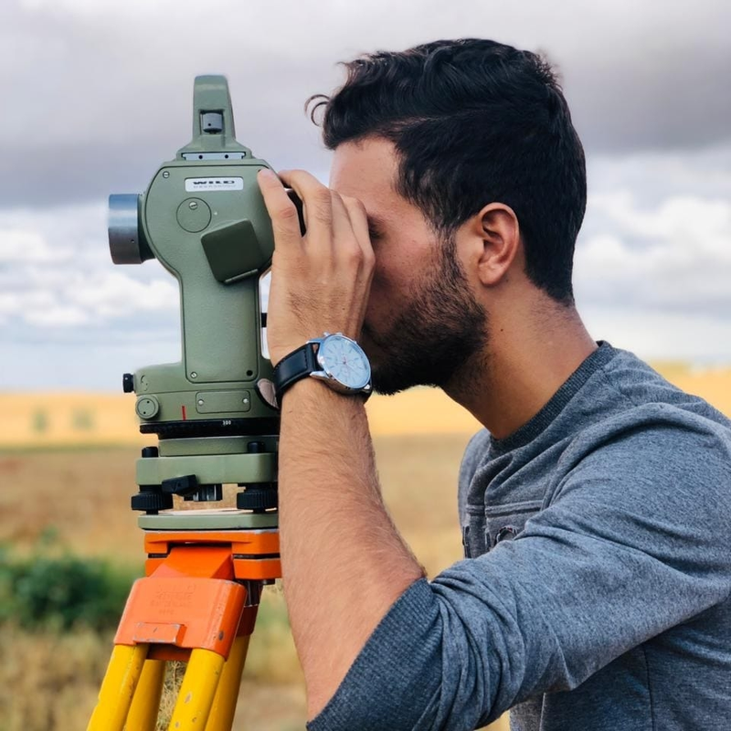
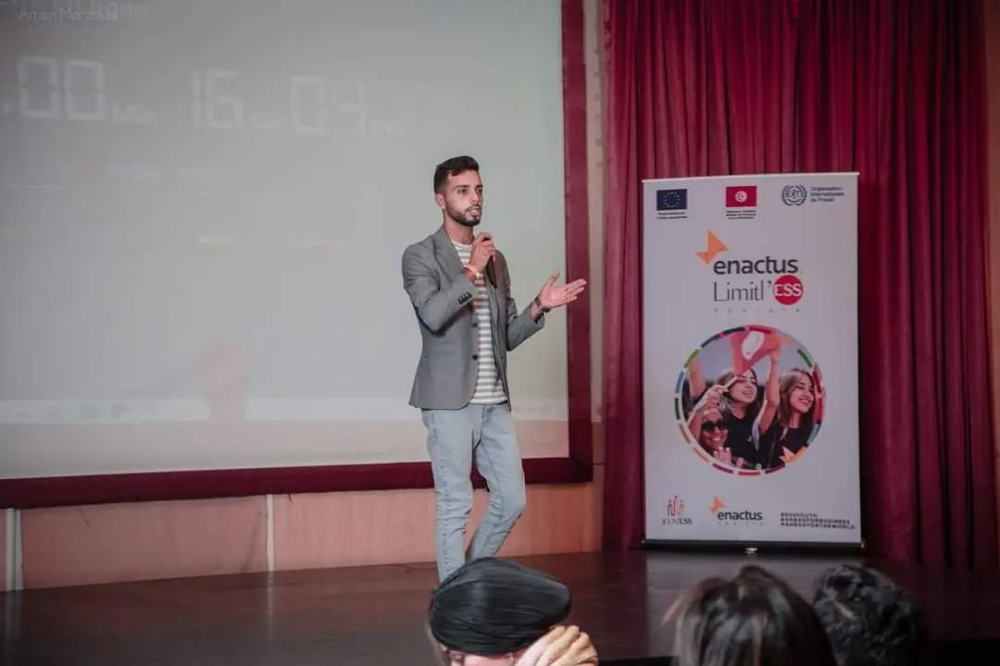

Engineer the rule
Translate domain requirements into explicit, testable spatial controls.
GIS · automation · telecom networks
I combine GIS engineering, Python automation, and telecommunications expertise to build practical tools, strengthen data quality, and turn complex spatial workflows into repeatable systems.
About
My work sits where geospatial engineering, network infrastructure, and software development meet. I design tools that make spatial controls clearer, reduce repetitive handling, protect source data, and leave teams with outputs they can audit and reuse.
Trained in topography and geomatics, I have worked across GIS development, fibre-optic engineering, field mapping, spatial databases, and remote sensing. That combination helps me move comfortably from a business rule or network anomaly to the code, interface, and technical documentation needed to solve it.
Translate domain requirements into explicit, testable spatial controls.
Prefer read-only analysis, safe exports, validation, and traceable changes.
Package technical workflows into interfaces and reports people can navigate.
Featured work
Selected case studies are grounded in source code, documentation, working applications, and authentic project outputs. Sensitive identifiers have been excluded.
A local Windows application that brings fragmented GIS and telecommunications quality controls into one guarded, navigable workspace.
Indexed spatial-matching and data-cleaning pipelines for network assets, including chamber naming, reference generation, proximity analysis, topology checks, and controlled GeoPackage or CSV exports.
An offline, browser-based learning experience that turns 57 fictional GIS and telecommunications quality-control scenarios into randomized, themed challenges with immediate explanations and local progress tracking.
Launch the real quizRemote-sensing workflows for water-surface detection and multitemporal land-cover analysis, supported by an existing Google Earth Engine application and R-based analytical work.
A tourist-navigation and spatial-database project for coastal routes, developed during GIS work with the Association for the Protection of the Coastline in Maamoura.
Case-study deep dive
QoD Tools is presented as an engineering release candidate, not as a certified commercial product. The interface captures below use synthetic or redacted data.
The application detects available project layers, validates inputs, required fields, sidecars, and projected coordinate systems before a control starts.
QGIS Python processes execute outside the interface, keeping it responsive and separating orchestration from geospatial calculation.
Source layers stay read-only by default. Corrections are exported to new files, while the optional direct trench-reference edit is disabled by default.
CSV outputs can be compared, filtered, sorted, paged through a temporary SQLite cache, and exported safely for further analysis.
Grouped by engineering purpose rather than presented as isolated scripts.
Tools I develop
I build more than one-off scripts: I package logic into guarded workflows, clear inputs, traceable outputs, and documentation that makes a tool usable beyond its author.
Local PyQt interfaces that orchestrate QGIS Python tools, validate inputs, expose progress, and keep sensitive project data on the workstation.
Reference checks, duplicate detection, self-intersection analysis, proximity matching, topology consistency, and correction exports.
Filterable CSV review, normalized schemas, safe exports, and anomaly views designed to make technical controls easier to interpret.
Browser-based training experiences that turn GIS and QoD concepts into structured questions, explanations, progress, and review.
Technical capabilities
Skills are grouped by how they contribute to an engineering workflow. No arbitrary percentage ratings.
Spatial analysis, coordinate reference systems, topology, geographic databases, field mapping, and cartographic outputs.
Data-processing pipelines, desktop interfaces, validation utilities, safe exports, and workflow orchestration.
Optical-network data modelling, preliminary and detailed studies, network consistency, and quality assurance.
Multitemporal imagery, raster analysis, land-cover change, water detection, dashboards, and technical communication.
Experience
The selected timeline focuses on roles most relevant to GIS, geomatics, network engineering, and automation.
Preliminary and detailed fibre-network studies, with a focus on GIS-supported quality-of-data processes and engineering consistency.
Developed QGIS plugins and Python tools for geospatial processing, data validation, and repeatable engineering workflows.
Supported strategic planning and real-time field mapping using GIS and QField workflows.
Prepared land-related technical files and carried out topographic surveying with field equipment.
Developed a tourist navigation application and managed spatial data for a coastal protection association.
* “Present” is retained from the existing portfolio and should be updated whenever the role changes.
Engineering in context
Geomatics starts with the physical world. My background in surveying and field mapping informs how I think about coordinate systems, geometry, infrastructure, and the reliability of what ends up in a database.
The same mindset carries into software: validate assumptions, make exceptions visible, keep outputs traceable, and design around the person who will use the result.


Contact
I’m interested in conversations around GIS engineering, geospatial automation, data quality, FTTx workflows, remote sensing, and practical technical tooling.